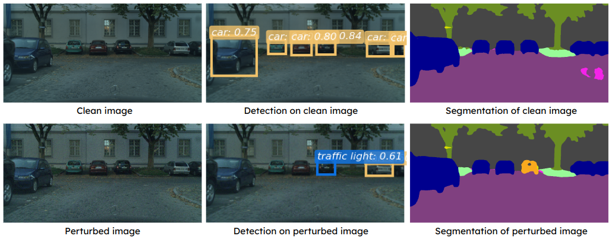
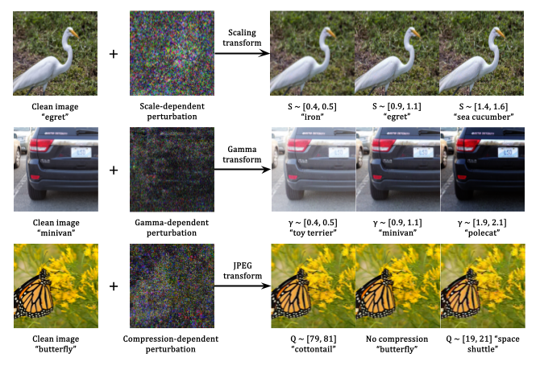

|
I am a third-year PhD student at the Department of Electrical and Computer Engineering at UC, Riverside, where I work on trustworthy machine learning and inverse problem. I am fortunate to be advised by Professor M. Salman Asif. I received my Bachelor's degree from Huazhong University of Science and Technology in 2022.
CV /
Scholar /
DBLP /
GitHub /
Lab |
|
Oct. 2024: I will present our recent work SLUG at NeurIPS24 SafeGenAi Workshop. |
|

|
Zikui Cai*, Yaoteng Tan*, M. Salman Asif (* Equal contribution) CVPR, 2023 arXiv / open access / code / poster We propose a query-efficient approach for adversarial attacks on dense prediction models. Our proposed method can generate a single perturbation that can fool multiple blackbox detection and segmentation models simultaneously, demonstrate generalizability across different tasks. |
{kind=link}
|
|

|
Zikui Cai, Yaoteng Tan, M. Salman Asif Preprint, 2024 (New) arXiv / code / project page We propose a highly efficient machine unlearning method for fundation models (e.g., CLIP, Stable Diffusion, VLMs) that requires only one-time gradient calculation and one-step update on one model layer that are selected based on introduced metrics, layer importance and gradient alignment. |
|

|
Yaoteng Tan, Zikui Cai, M. Salman Asif Preprint, 2024 (New) arXiv Many properties of adversarial attacks are well-studied today (e.g., optimization, transferability, physical implementa- tion, etc.). In this work, we explore an under-researched transform-dependent property of adversarial attacks, which the optimization process of additive adversarial perturbations can be combined with various image transformations to produce versatile, transform-dependent attack effects. |
|
Conference review:
Teaching Assistant:
Acknowledgement: template from Jon Barron |